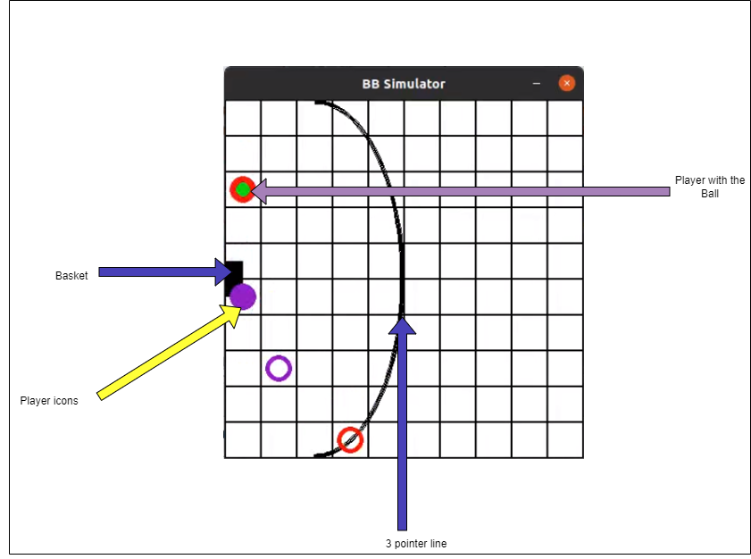
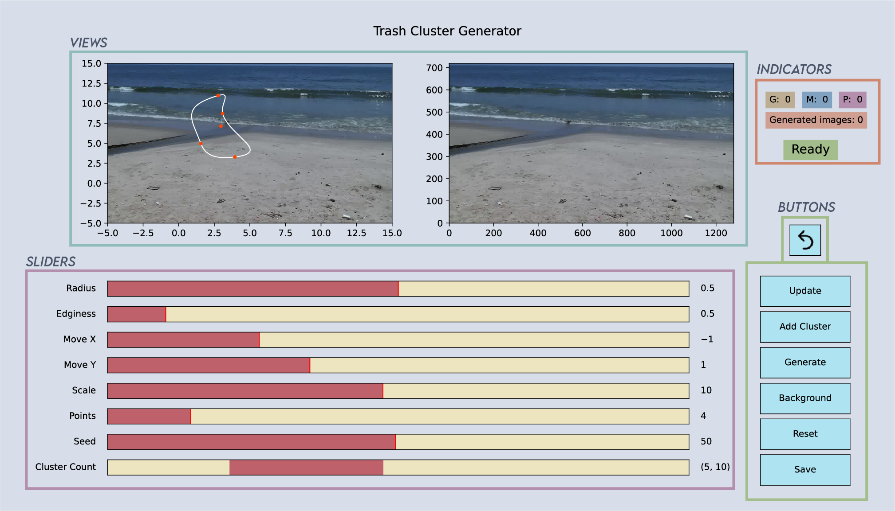
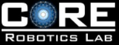

I am an M.S. Robotics graduate from Georgia Tech, specializing in Artificial Intelligence (AI), Perception, and Mechanics. Currently, I am a Research Affiliate in the BrainML lab under Dr. Anqi Wu ,
where I focus on designing learning-based motion prediction algorithms to enhance robot navigation.
I received my bachelor's degree in Mechanical Engineering at SSNCE, where
my thesis involved developing a quadrotor to detect and localize coastal debris.
I interned at Swaayatt Robots in Bhopal during my undergraduate studies, where I contributed to software development for autonomous vehicles.
Additionally, I served as a Graduate Teaching Assistant at Georgia Tech for CS 6601/3600: Introduction to Artificial Intelligence.
I am deeply passionate about robotics, autonomous systems, and leveraging deep learning for real-time applications.
Outside of work, I enjoy playing volleyball, reading, and discussing latest developments in Autonomous Driving.
If you're short on time, feel free to check out my resume for a quick overview of my work!
Distributed Advantage Actor Critic (DAAC) [Code]
/
[Report]
Developed a distributed approach facilitating model training across multiple nodes in a topology by providing mechanisms for remote communication using RPC.
Enhanced data collection by leveraging A3C and PAAC networks to gather experiences from a distributed cluster, achieving a 1.5X speedup over the serial counterpart.

Observing emergence of collaboration in a multi-agent environment [Code]
Simulated and studied the emergence of collaborative behaviour amongst players in a game of basketball in 2v2 setting.
Built a 2D simulator and prepared an interface compatible with Gym and PettingZoo, trained with Multi-Agent PPO.
Identified collaborative behavior and its strong correlation to winning by comparing the pass/win ratio of each team.
Human Motion Prediction: With great power comes great res-pose-ability [Code] /
[Report]
Investigated sequential models for human pose prediction on computationally
constrained systems.
Developed Temporal Convolutional Networks (TCNs) that outperformed Vanilla Transformers by 53% with less than 50% of the parameters.
Achieved a 56% improvement over Transformers using a generative model with TCNs as the backbone.
Obstacle avoiding and sign following mobile robot
Engineered a mobile robot via state machines to classify signs and avoid obstacles by fusing LiDAR, Pi-Cam & odometry.
Deployed motion planning algorithms, including A* and RRT* using ROS2 Nav-Stack for real-time autonomous
navigation within a maze environment. Implemented pure pursuit controller for real-time lane following.
Programmed a Universal Robot (UR5) to paint an outline of an object using visual cues from an image in real time.
Performed Forward and Reverse displacement analysis using the DH parameters and simulated robot motion using waypoint generation techniques in MATLAB and Gazebo.
Publications

Multi-class segmentation of coastal debris using encoder-decoder architectures [Paper]
Surya Prakash, S., Vengadesh, V., Vignesh, M., Gopal, S.K,
Machine Learning Techniques for Smart City Applications: Trends and Solutions, Springer 2022
Experience
Research Affiliate
| BrainML Laboratory, Georgia Tech
Aug 2024 - Present
Modeled undirected spatio-temporal graphs to analyze behavioral interactions among mice by predicting their motion.
Setup a distributed framework for training sequential models, with transformer-based attention to estimate edge weights.
Constructed a custom loss function to preserve mice anatomy, achieving 12% improvement in final trajectory prediction.

Student Researcher
| CORE Robotics Laboratory, Georgia Tech
May 2023 - May 2024
Designed a simulation environment in MuJoCo to test an autonomous wheeled robot for mobile navigation, focusing on
various control strategies using reinforcement learning.
Used off-policy learning & achieved around 98% success rate on mobile navigation and reacher tasks with < 1% error.
Computer Vision and Deep Learning Intern
| Swaayatt Robots Pvt. Ltd
Oct 2021 - Mar 2022
Researched CNN pruning techniques for object detection and tracking on image data from an L4 autonomous vehicle.
Investigated & optimized various neural network architectures, leveraging Google TPUs for large-scale training.
Employed Lottery Ticket Hypothesis and compressed VGG16 by 45% & YOLOv3 by 30% with 5% accuracy drop.
This website is based on Jon Barron's personal webpage. Please free to check out the source code
{kind=link}